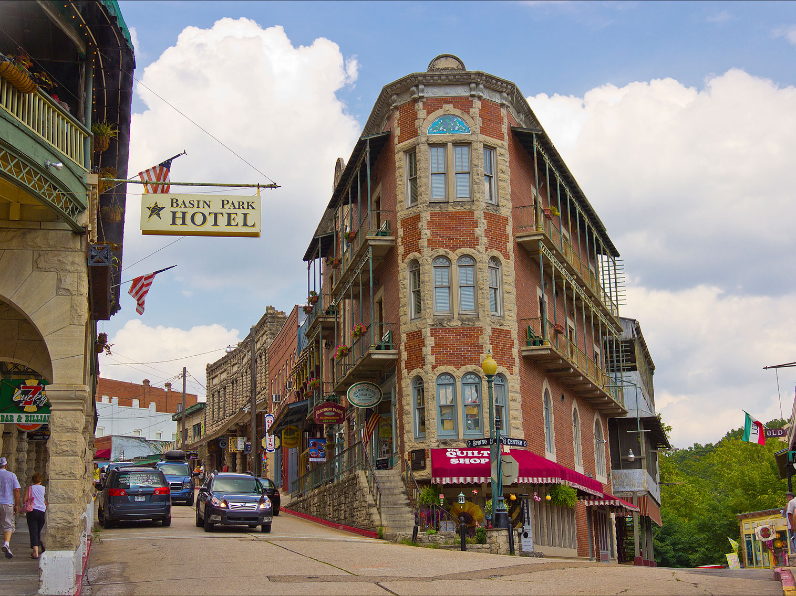
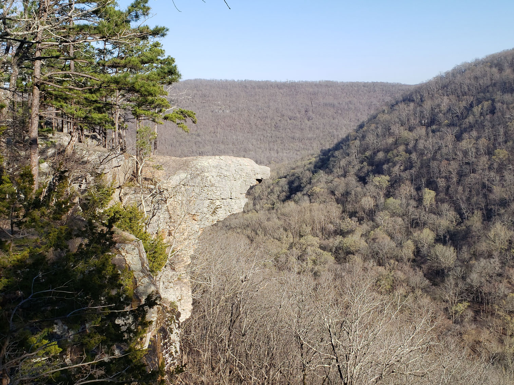
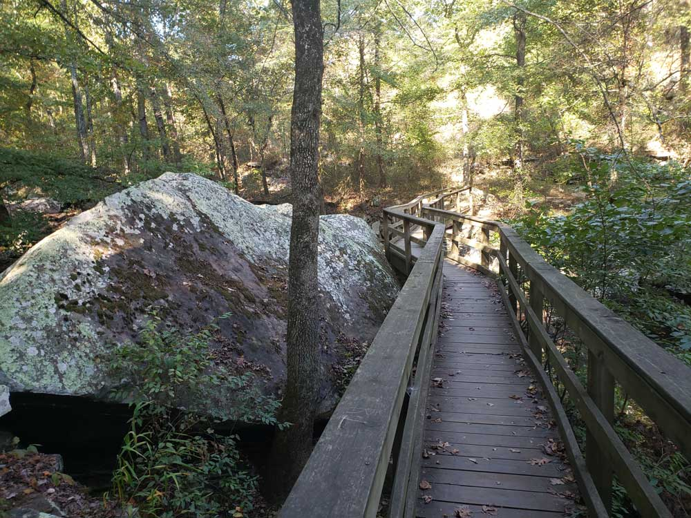

Missouri Travel Guide
Explore St. Louis' Gateway Arch, Kansas City's barbecue and jazz, and hike the scenic Ozark Mountains along Missouri's winding namesake river.
Top Locations


-400.jpg)


Places to See in Missouri
St Louis★
Historic riverfront city celebrated for its iconic architecture, thriving music heritage, and diverse culinary scene.
Branson★
City in the Ozark Mountains featuring collection of entertainment theaters including Silver Dollar City and Dolly Parton's Stampede

Kansas City★
Major metropolitan center known for its barbecue, jazz heritage, professional sports teams, and diverse economy.

Eureka Springs, AR
doug_wertman, CC BY 2.0, via Wikimedia Commons; Image Size Adjusted

Cities

Whitaker Point
Missouri National Protected Areas

Cedar Creek Trail, Petit Jean State Park
State Parks East Missouri
State Parks West Missouri
Missouri State Historic Sites
Overview
Missouri is a Midwestern state of about 6.2 million people that blends Midwestern and Southern culture. Jefferson City is the capital, Kansas City is the largest city, and St. Louis anchors the largest metropolitan area. The state is named for the Missouria people, and its role as the "Gateway to the West" is symbolized by the Gateway Arch.
Visitors come to Missouri for its big-city attractions, music, and food: the Gateway Arch and museums of St. Louis, the jazz and barbecue of Kansas City, and the shows of Branson. Nature lovers float the Ozark rivers, explore caves such as Meramec Caverns, and boat and fish at the Lake of the Ozarks. Literature fans visit Mark Twain's boyhood town of Hannibal, and many travelers follow the state's Route 66, Pony Express, and Lewis and Clark history.
Geography
Missouri is divided by the Missouri River, which crosses the state from west to east before joining the Mississippi, the state's eastern boundary. North of the river, glaciated plains and rolling farmland dominate, while the southern half is the forested Ozark Plateau, with clear spring-fed rivers, hollows, and more than 6,000 caves that earn Missouri the nickname "The Cave State." Taum Sauk Mountain, at 1,772 feet (540 m), is the highest point, and the Bootheel in the southeast lies in the Mississippi Delta lowlands.
History
People have lived in Missouri for at least 12,000 years, and the Mississippian culture built large mound cities nearby before declining in the 14th century. The Osage, Missouria, and other nations were here when French explorers arrived in the 17th century, and Ste. Genevieve, founded in the 1730s, became the first permanent European settlement; St. Louis followed in 1764. The region passed to the United States in the 1803 Louisiana Purchase, and Missouri became the 24th state on August 10, 1821, under the Missouri Compromise. A divided border state during the Civil War, Missouri later became a starting point for the Oregon, Santa Fe, and California Trails and for the Pony Express, which launched from St. Joseph in 1860.
St. Louis
St. Louis, founded in 1764 by French fur traders at the confluence of the Mississippi and Missouri Rivers, is defined by the 630-foot stainless steel Gateway Arch, the tallest man-made monument in the United States. The city hosted the 1904 World's Fair and Olympics, and Forest Park, the site of the fair, is larger than New York's Central Park and holds the free Saint Louis Zoo, the Saint Louis Art Museum, the Missouri History Museum, and the Science Center. Other highlights are the Missouri Botanical Garden, the City Museum, the Anheuser-Busch Brewery, the Cathedral Basilica with its mosaics, and the National Blues Museum. The city is also known for toasted ravioli, gooey butter cake, and Cardinals baseball at Busch Stadium.
Kansas City
Kansas City, Missouri's largest city, sits on the western edge of the state at the confluence of the Missouri and Kansas Rivers, and is known for its barbecue, jazz, and fountains. Its jazz heritage is celebrated at the American Jazz Museum in the 18th & Vine district, and its barbecue, with slow-smoked burnt ends and a sweet, thick tomato sauce, is among the best in the country. The Nelson-Atkins Museum of Art is one of the nation's leading art museums, and the National WWI Museum and Memorial is the nation's official World War I museum. Union Station, Crown Center, the Kauffman Center, and the Country Club Plaza shopping district are other highlights. Independence, nearby, has the Truman Library and Truman home, and the Chiefs and Royals play at the Truman Sports Complex.
Ozark Mountains
The Ozarks cover most of southern Missouri, a highland of forested hills, hollows, bluffs, caves, and clear, spring-fed rivers. The region is one of the most popular outdoor destinations in the Midwest, with float trips, hiking, fishing, and camping. Ozark National Scenic Riverways protects the Current and Jacks Fork Rivers, and the state park system includes Johnson's Shut-Ins, Elephant Rocks, and Bennett Spring, a trout-fishing destination, and Ha Ha Tonka, with a castle ruin above a spring. Missouri has more than 6,000 known caves, and Meramec Caverns, once a hideout of Jesse James, is the most famous. Branson is the entertainment capital of the Ozarks, with live shows, Silver Dollar City, and the lakes and trails of Table Rock, and Springfield has the Wonders of Wildlife museum.
Route 66 in Missouri
Route 66 crosses Missouri for about 300 miles on a diagonal, from the St. Louis area to the Kansas line near Joplin, passing through small towns, Ozark scenery, and roadside attractions. Springfield claims to be the birthplace of Route 66, because the road's name was reportedly set there in 1926. Highlights include the 66 Drive-In Theatre in Carthage, the Gary's Gay Parita filling station replica near Paris Springs, Devil's Elbow along the Big Piney River, the Wagon Wheel Motel in Cuba, which has been open since 1936, and Route 66 State Park, near Eureka, which is on the site of the vanished town of Times Beach. Meramec Caverns was a major stop on the Mother Road, and the World's Second Largest Rocking Chair is in Fanning, and visitors in St. Louis can see the Ted Drewes Frozen Custard stand, a Route 66 landmark.
Lake of the Ozarks
Lake of the Ozarks is a 54,000-acre reservoir in central Missouri with about 1,150 miles of shoreline, created in 1931 when Union Electric built Bagnell Dam on the Osage River. The lake has become one of the Midwest's most popular summer resorts, with boating, fishing, waterskiing, resorts, and lively waterfront dining and nightlife around the Lake Ozark and Osage Beach areas. Lake of the Ozarks State Park is the largest state park in Missouri and has beaches, trails, and caves, and Jacobs Cave is a nearby show cave. Visitors can also see the historic Willmore Lodge and explore the Ha Ha Tonka castle ruins. Summer, especially the weekends from Memorial Day to Labor Day, is the busiest season.
National Protected Areas
Missouri's national park sites cover wilderness and history. Gateway Arch National Park in St. Louis honors westward expansion, and Ozark National Scenic Riverways, created in 1964, protects the Current and Jacks Fork Rivers, with springs, caves, and float trips. Ste. Genevieve National Historical Park preserves French colonial heritage, Wilson's Creek National Battlefield marks a major 1861 Civil War battle, and the George Washington Carver National Monument honors the scientist's birthplace. The Harry S Truman and Ulysses S. Grant National Historic Sites, and the Trail of Tears and Pony Express National Historic Trails, are also in the state.
State Parks and Historic Sites
Missouri's state park system is one of the country's best. In the east, Johnson's Shut-Ins has natural water slides, Elephant Rocks is known for its giant granite boulders, and Taum Sauk Mountain has the state's highest point and tallest waterfall. In the central and western Ozarks, Ha Ha Tonka features a ruined castle above a spring, and Bennett Spring and Roaring River are famous for trout fishing. Historic sites include Pilot Knob, Bollinger Mill, and Mastodon State Historic Site.
Seasons and When to Visit
Summer is the peak season for float trips, lake recreation, and Branson's shows, though it is hot and humid. Spring is a favorite for flowing springs, wildflowers, and waterfalls, and fall brings vivid foliage across the Ozarks, especially in October. Winter is milder in the south, with trout fishing, bald eagle viewing along the rivers, and Branson's holiday shows, while the plains of the north and west can see cold snaps and snow.
This article uses material from the Wikipedia article "Missouri" which is released under the Creative Commons Attribution-Share-Alike License 3.0. Additional sources: National Park Service, Missouri State Parks, State Historical Society of Missouri, and Visit Missouri.